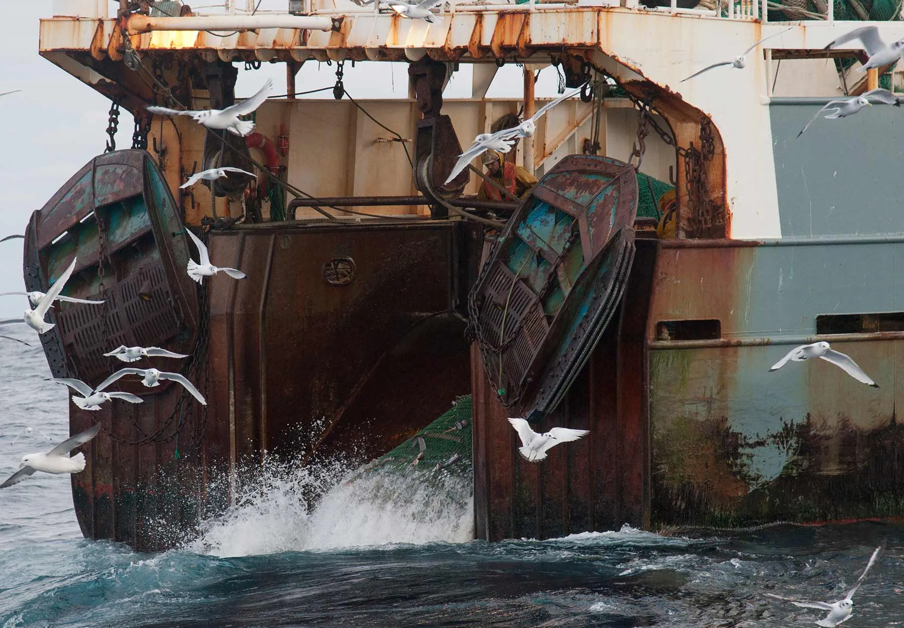
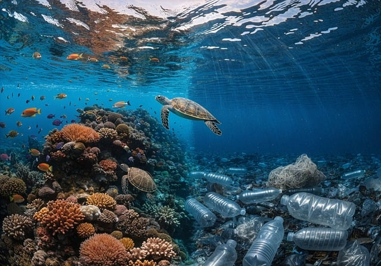
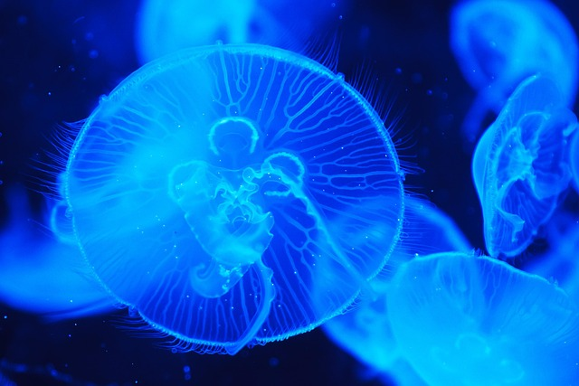
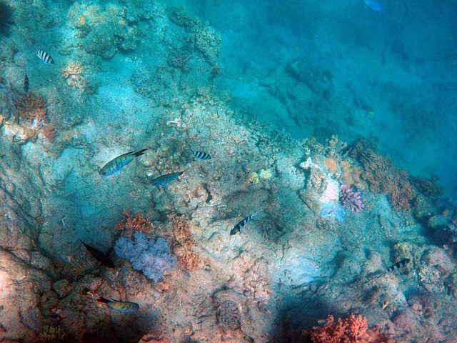
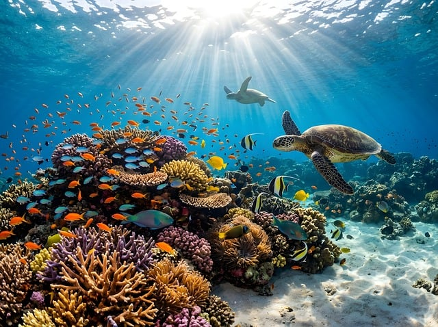

Deep-sea mining
Mining for cobalt, nickel, and other metals can disturb the seabed at an industrial scale, leaving long-lasting damage behind.
Go to sectionThe Deep Sea Conservation Coalition highlights mining, destructive fishing, and geoengineering as the major threats that can damage deep-sea habitats before they are fully understood.

Threats in the deep ocean do not stop at one point on the map. They spread through sediment, noise, and policy decisions that affect entire ecosystems.
These three pressures shape the main risks facing the deep sea.
Mining for cobalt, nickel, and other metals can disturb the seabed at an industrial scale, leaving long-lasting damage behind.
Go to section
Bottom trawling and similar practices flatten habitat that took thousands of years to form.
Go to section
Large-scale climate interventions in the ocean could introduce unknown risks to chemistry and deep-sea life.
Go to sectionThe coalition treats deep-sea mining as one of the clearest examples of a development path that could create irreversible damage in a place where species move slowly and recover slowly.

Mining systems scrape or vacuum the seabed, remove habitat, and leave sediment plumes behind. Those effects can spread well beyond the exact extraction area.
Because deep-sea species and habitat processes operate over long timescales, even localized mining can have large ecological consequences. That is why DSCC supports a precautionary approach.
Main concern
The problem is not only what gets removed. It is also the uncertainty: scientists still do not fully know how many species live in these places or how ecosystems will respond after disturbance.
A moratorium on deep-sea mining until the risks, governance gaps, and justice issues have been addressed.
If the habitat is damaged first and studied later, the public loses the chance to protect ecosystems that cannot quickly recover.
Bottom trawling is often discussed as a fishing practice, but in the deep sea it behaves like an industrial disturbance event. It can break corals, crush sponges, and churn sediments.
Heavy nets and gear are dragged across the seabed to catch a relatively small number of target species. The result is a much wider field of damage.
Habitats that have taken centuries or millennia to form can be flattened in minutes. That is why the page and the wireframe both treat destructive fishing as a major conservation priority.
Policy focus
DSCC supports stronger protections for seamounts and vulnerable marine ecosystems, along with better alignment between fishing rules and conservation goals.

After repeated trawling, complex habitat can be reduced to rubble or bare rock, leaving fewer places for species to shelter and feed.
Sediment disturbance can also change carbon storage and water quality, meaning the impact is ecological and climatic at the same time.
Some climate proposals aim to store carbon or alter ocean chemistry. The concern is that these interventions could shift the burden of climate action onto ecosystems that are already under stress.

Geoengineering is sometimes presented as a future fix, but the scientific and governance questions are still unresolved. That makes it risky to test in fragile ecosystems.
The coalition is not arguing against climate action. It is arguing that climate solutions must not create new damage in the ocean while trying to solve another problem.
Key point
Any ocean-based intervention needs strong oversight, transparency, and proof that it will not harm biodiversity or ocean chemistry at scale.
The questions below highlight the uncertainty around deep-sea carbon capture.